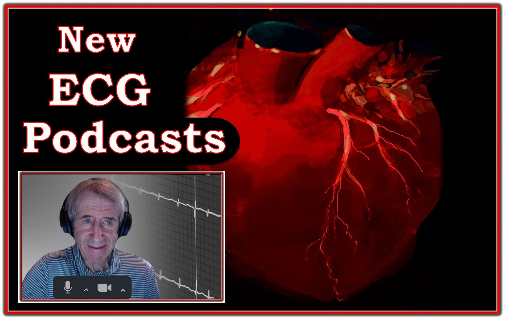

24/07/2024 — Các podcast ECG về điện tâm đồ 12 chuyển đạo và rối loạn nhịp — Điểm then chốt, cạm bẫy, OMI, AI và nhiều nội dung khác
Bản dịch tiếng Việt của bài "ECG Podcasts on 12-Lead & Arrhythmias — Pearls, Pitfalls, OMI & AI and Lots More" – Dr. Smith’s ECG Blog. Giữ nguyên toàn bộ 7 hình ảnh của bản gốc.
=================================
- Gần đây tôi đã thu một loạt 4 podcast về các khái niệm MẤU CHỐT trong đọc điện tâm đồ.
- LINK NHANH — https://tinyurl.com/KG-Blog-431 (đường link rút gọn tới loạt podcast) —
=================================


=================================
Các Podcast ECG mới của tôi (28/5/2024):
- Những podcast này thuộc loạt Mayo Clinic Cardiovascular CME Podcasts (“Making Waves”) — do BS. Anthony Kashou dẫn dắt. Chúng có trên trang Mayo Clinic Cardiovascular CME.
- Bạn có thể điều chỉnh tốc độ phát bản ghi âm (Nếu thấy tốc độ “chậm” — tăng lên tốc độ 1,25 có lẽ là tối ưu cho bạn! ).
- Lưu ý phần Mục lục có mốc thời gian (Timed Contents) mà tôi trình bày chi tiết dưới đây giúp dễ tìm nội dung cụ thể.
=============================

ECG Podcast #1 — Những lỗi thường gặp khi đọc điện tâm đồ (Và cách sửa các lỗi này một cách dễ dàng!) — do Mayo Clinic CV Podcast Series phát hành ngày 19/12/2023 (30 phút).
- 0:00 — Mở đầu bởi BS. Anthony Kashou: Chào mừng đến với chuyên mục điện tâm đồ của Mayo Clinic: “Making Waves” (Chủ đề hôm nay — Giới thiệu diễn giả hôm nay = Ken Grauer, MD).
- 2:00 — BS. Grauer: “Làm thế nào ông trở nên giỏi đọc điện tâm đồ đến vậy?”
- 3:30 — Tôi giới thiệu chủ đề hôm nay ( = “Những lỗi thường gặp khi đọc điện tâm đồ”) — và lý do tôi chọn chủ đề này.
- 4:35 — Tôi được gửi một bản ghi điện tâm đồ. “Lỗi” thứ 1 là hoặc không có bệnh sử (hoặc có bệnh sử nhưng không cho tôi biết điều tôi cần biết).
- 6:40 — Sự cần thiết của một bệnh sử phù hợp (Các ví dụ lâm sàng!).
=====================
Điểm MẤU CHỐT: Hãy chắc chắn liệt kê tất cả các thuốc chống loạn nhịp (Lưu ý các thuốc làm chậm tần số tim — Các sản phẩm thảo dược! — và hỏi về thuốc nhỏ mắt chẹn beta! ).
=====================
- 13:10 — Lỗi tiếp theo = KHÔNG buộc bản thân phải cam kết với một chẩn đoán!
- 14:10 — Nhóm lỗi tiếp theo = Sự cần thiết của một Cách tiếp cận hệ thống (Điều này sẽ không làm bạn chậm lại! Ngược lại — nó giúp bạn nhanh hơn, chính xác hơn và khiến bạn nghe có vẻ thông thái hơn!).
- 15:50 — Hệ thống của tôi để Đọc nhịp ( = Trước tiên, hãy nhìn bệnh nhân! — sau đó, “Watch your Ps, Qs & 3Rs” (hãy để ý Ps, Qs & 3R) ).
- 18:15 — Lỗi kết luận vội vàng (premature closure) (Nghĩ rằng chỉ có 2 đáp án = “VT hoặc SVT” — vì bạn quên mất Đáp án thứ 3 = một nhận định về xác suất tương đối!).
- 19:50 — Không đánh giá đúng xác suất thống kê! (tức là, Khả năng một nhịp nhanh QRS rộng (WCT) đều không có sóng P là VT là bao nhiêu?).
- 22:25 — Nếu bạn gặp một SVT đều ( = nhịp nhanh QRS hẹp) mà không thấy rõ sóng P thì sao? (4 nguyên nhân thường gặp? — Nguyên nhân hay bị bỏ sót nhất?)
25:10 — Hệ thống của tôi để Đọc điện tâm đồ 12 chuyển đạo: (6 thông số MẤU CHỐT cần xem là gì?).
- 6 thông số MẤU CHỐT tôi ưa dùng cho Cách tiếp cận hệ thống ( = Tần số – Nhịp – Các khoảng [PR-QRS-QTc] – Trục – Lớn các buồng tim & Thay đổi QRST).
- Hãy chắc chắn xem các khoảng ngay từ sớm trong quá trình đọc!
- 27:50 — TÓM TẮT bởi BS. Anthony Kashou.
= = = = = = = = = = = = = = = = = = = = = = = = = = = = = = = =
LƯU Ý: Để biết thêm “Quan điểm của tôi” về chẩn đoán OMI cấp bằng điện tâm đồ — Xem ECG Podcast #2 (LINK và mục lục chi tiết bên dưới!) của tôi
- Mời bạn cũng Xem thêm các Video ECG #406, 407 và 408 mới của tôi về chủ đề này (BẤM VÀO ĐÂY).
- Về các link tới những ca điện tâm đồ có nhiễu và các “sự cố kỹ thuật” (technical misadventures) khác — Mời bạn xem Bình luận của tôi ở cuối trang của bài ngày 18 tháng Hai năm 2024 trên Dr. Smith’s ECG Blog.
Và về các rối loạn nhịp:
- Để biết thêm về WCT đều — Xem Bình luận của tôi trong bài ngày 5 tháng Năm năm 2020 và trong bài ngày 15 tháng Tư năm 2020 trên Dr. Smith’s ECG Blog.
- Để biết thêm về SVT đều — Xem Bình luận của tôi trong bài ngày 25 tháng Mười năm 2022 và trong bài ngày 6 tháng Ba năm 2020 trên Dr. Smith’s ECG Blog
- Để biết thêm về cách nhận biết cuồng nhĩ (AFlutter) — Xem Bình luận của tôi trong bài ngày 1 tháng Năm năm 2023 trên Dr. Smith’s ECG Blog.
= = = = = = = = = = = = = = = = = = = = = = = = = = = = = = = = =
ECG Podcast #2 — Những lỗi đọc điện tâm đồ dẫn đến bỏ sót tắc mạch vành cấp (Ôn lại khái niệm OMI — và lý do “mô hình STEMI” đã lỗi thời và bỏ sót quá nhiều ca tắc mạch vành cấp!) — do Mayo Clinic CV Podcast Series phát hành ngày 16/1/2024 (33 phút).
- 0:00 — Mở đầu bởi BS. Anthony Kashou: Chào mừng đến với chuyên mục điện tâm đồ của Mayo Clinic: “Making Waves” (Chủ đề hôm nay — Giới thiệu diễn giả hôm nay = Ken Grauer, MD).
- 2:25 — BS. Grauer: Lỗi thứ 1: Năm 2024 vẫn còn quá nhiều bác sĩ lâm sàng mắc kẹt trong “mô hình STEMI” dựa trên milimét đã lỗi thời. (Điều chúng ta thực sự quan tâm ở bệnh nhân mới có CP [Chest Pain – đau ngực] là gì? ).
- 6:15 — Lỗi #2: Lạm dụng thuật ngữ “NSTEMI” — mà trên thực tế là một thuật ngữ vô dụng. Nhiều (nếu không nói là hầu hết) ca NSTEMI thực ra là OMI ( = nhồi máu cơ tim do tắc mạch vành cấp (acute coronary Occlusion MI)).
- 7:42 — Lỗi #3: Tiêu chuẩn điện tâm đồ để chẩn đoán OMI là gì?
- 9:25 — Có sóng T tối cấp hay không?
- 11:37 — Bạn có tìm được bản ghi trước đây của bệnh nhân không?
- 12:20 — Hãy xem kỹ các chuyển đạo lân cận!
- 13:10 — Mối liên hệ soi gương đối nghịch “kỳ diệu”! (Dùng nghiệm pháp soi gương (Mirror Test) của tôi để nhận ra tức thì OMI thành sau — và OMI thành dưới bằng cách so sánh chuyển đạo III với aVL).
- 15:35 — Vì sao không cần đến chuyển đạo phía sau!
- 18:58 — Tìm thay đổi ST-T động! (Bao lâu nên ghi lại điện tâm đồ một lần?)
- 20:25 — Troponin độ nhạy cao lần thứ 1 có thể bình thường.
- 21:00 — Cần biết gì về bản ghi trước đây?
- 21:50 — Lỗi Lớn nhất — là không đối chiếu bệnh sử với từng điện tâm đồ được ghi! (Vì người điều trị không nắm được khái niệm tái tưới máu tự phát!).
- 29:00 — Lỗi Cuối cùng — của hôm nay là không học hỏi từ các ca bệnh của chính mình!
- 31:28 — TÓM TẮT bởi BS. Anthony Kashou.
ECG Podcast #3 — Đọc điện tâm đồ bằng máy tính và AI năm 2024 (Liệu có chương trình đọc điện tâm đồ bằng máy tính nào có thể giúp bác sĩ lâm sàng đọc điện tâm đồ tốt hơn một cách đáng tin cậy không?) — do Mayo Clinic CV Podcast Series phát hành ngày 19/3/2024 (28 phút).
- 0:00 — Mở đầu bởi BS. Anthony Kashou: Chào mừng đến với chuyên mục điện tâm đồ của Mayo Clinic: “Making Waves” (Chủ đề hôm nay — Giới thiệu diễn giả hôm nay = Ken Grauer, MD).
- 2:00 — BS. Kashou hỏi BS. Grauer: “Năm 2024 — Ông nhìn nhận kết quả đọc điện tâm đồ bằng máy tính và AI ra sao?”
==============================
Xin LƯU Ý: Tôi chia các bình luận của mình về việc sử dụng kết quả đọc điện tâm đồ bằng máy tính thành 2 “Thời kỳ”: i) Thời kỳ ban đầu (tức là, từ giữa thập niên 1980 cho đến rất gần đây); — và, ii) Thời kỳ QOH mới (Queen Of Hearts) — trong đó ứng dụng QOH để đánh giá OMI cấp đang nhanh chóng trở nên phổ biến rộng rãi!
Tổng quan chung về podcast này:
- Từ 0:00-đến-5:54 = Phần giới thiệu.
- Từ 5:54-đến-16:13 = Điểm lại kinh nghiệm của tôi với kết quả đọc điện tâm đồ bằng máy tính từ giữa thập niên 1980 cho đến gần đây ( = Kỷ nguyên ban đầu).
- Từ 16:13-đến-27:00 = Cách mà ứng dụng QOH mới có thể cải thiện đáng kể khả năng nhận diện nhanh OMI cấp. (Thính giả nào chủ yếu quan tâm đến QOH — cứ thoải mái nhảy tới phút 16:13 của podcast dài 28 phút này).
- Từ 27:00-đến-HẾT — TÓM TẮT bởi BS. Anthony Kashou.
==============================
Phân tích nội dung chi tiết hơn:
- 2:20 — “Lời miễn trừ” của tôi: Những gì trình bày hôm nay phản ánh quan điểm của tôi, dựa trên kinh nghiệm của tôi. Tôi không có lợi ích tài chính nào với bất kỳ sản phẩm thương mại nào liên quan đến những nhận xét của mình.
- Tôi mở đầu bằng việc nêu một số Ưu & Nhược điểm của AI trong cuộc sống “bên ngoài” thế giới điện tâm đồ …
- 5:54 — Vậy năm 2024, tôi nghĩ AI đang tác động đến việc đọc điện tâm đồ như thế nào? Cần bao nhiêu “sự giám sát của con người”?
- 7:15 — Nhiều lỗi cơ bản vẫn tiếp tục xảy ra! Vậy thì — Chúng ta đang đi về đâu với việc dùng AI để đọc điện tâm đồ?
- 8:00 — Để trả lời, đáng để nhìn lại chúng ta đã đi lên từ đâu? Tôi điểm lại kinh nghiệm của mình với kết quả đọc điện tâm đồ bằng máy tính, vốn bắt đầu theo đúng nghĩa đen từ nhiều thập kỷ trước, vào những năm 1980! Suốt những thập kỷ này (và cho đến hiện tại) — vẫn tồn tại xu hướng quá-nhiều-bác-sĩ chấp nhận không chút nghi vấn những gì máy tính nói. Điều này cần phải thay đổi.
- 10:20 — Máy tính có thể hỗ trợ bác sĩ đọc điện tâm đồ tốt nhất như thế nào? Cần nhận ra rằng các bác sĩ với mức độ kinh nghiệm khác nhau và được đào tạo khác nhau thì có nhu cầu khác nhau (tức là, nhu cầu của một bác sĩ tim mạch hay bác sĩ cấp cứu giàu kinh nghiệm thì khác với nhu cầu của những bác sĩ được đào tạo và có kinh nghiệm đọc điện tâm đồ ít hơn nhiều).
- 11:35 — Quan điểm của tôi về: Liệu máy tính có bao giờ đọc được các rối loạn nhịp phức tạp?
- 12:15 — Về kinh nghiệm của tôi từ những năm 1980 cho đến ~2010: Tôi đã đi từ chỗ ghét kết quả đọc bằng máy tính đến chỗ yêu thích chúng như thế nào (sau khi cuối cùng tôi đã hiểu được máy tính có thể và không thể làm gì).
- 14:45 — Theo định nghĩa của tôi — BẠN có phải là một người đọc điện tâm đồ “chuyên gia”? Máy tính giúp chuyên gia tiết kiệm thời gian.
- Với những người “không phải chuyên gia” ( = 90-95% bác sĩ, dù nhiều bác sĩ như vậy vẫn có thể là người đọc điện tâm đồ rất giỏi) — máy tính đưa ra ý kiến thứ 2.
- 16:13 — Đó là chuyện ngày ấy … Còn bây giờ thì sao? (tức là, AI có thể mang lại gì cho chúng ta trong năm 2024 như một cách để cải thiện việc đọc điện tâm đồ?).
Tôi nhấn mạnh 4 khái niệm sau trong 11 phút cuối này (16:13-27:00):
- — i) Mọi chương trình điện tâm đồ mà tôi biết có trước khi QOH được phát triển — đều đã lỗi thời, và ít-hoặc-không có ích trong cấp cứu!
- — ii) Kết quả đọc bằng máy tính không hữu ích trong đánh giá rối loạn nhịp (Các rối loạn nhịp đơn giản thì rõ ràng với những bác sĩ có năng lực — còn với các bản ghi phức tạp thì máy tính mắc quá nhiều lỗi);
- — iii) Ứng dụng QOH mới đã chính xác đến kinh ngạc trong việc nhận diện tắc mạch vành cấp ở những ca không thỏa các tiêu chuẩn STEMI lỗi thời (nhờ nhận diện nhanh OMI cấp giúp tái tưới máu sớm, cứu vớt được vùng cơ tim quý giá!). Các thế hệ QOH tương lai sẽ còn tiếp tục cải thiện (Xem Dr. Stephen Smith’s ECG Blog với rất nhiều ca lâm sàng minh họa các đặc điểm của ứng dụng QOH này trong chẩn đoán OMI); — và,
- — iv) Chẩn đoán lâm sàng tối ưu OMI cấp ở thời điểm sớm trong diễn tiến đạt được tốt nhất nhờ sự kết hợp của một người đọc điện tâm đồ có năng lực, người sẵn lòng tiếp nhận ý kiến từ QOH.
- 27:00 — TÓM TẮT bởi BS. Anthony Kashou.
ECG Podcast #4 — Tất cả về điện tâm đồ so sánh trong điện tâm đồ 12 chuyển đạo và các rối loạn nhịp (So sánh các điện tâm đồ nghe có vẻ “dễ” — nhưng rất thường không được làm đúng!) — đăng trên Mayo Clinic CV Podcast Series ngày 21/5/2024 (35 phút).
- 0:00 — Giới thiệu bởi BS. Anthony Kashou: Chào mừng đến với chuyên mục điện tâm đồ của Mayo Clinic: “Making Waves” (Nội dung thảo luận hôm nay — Về diễn giả hôm nay = Ken Grauer, MD).
- 1:50 — BS. Kashou hỏi BS. Grauer: “Chúng ta có thể học được gì từ việc so sánh điện tâm đồ?” — và — “Làm sao so sánh các bản ghi tốt nhất mà vẫn tiết kiệm thời gian?”
- 2:15 — TÔI giới thiệu chủ đề hôm nay — và VÌ SAO tôi chọn nói về vấn đề lâm sàng quan trọng nhưng thường bị bỏ qua này.
==============================
Xin LƯU Ý: Những nhận xét của tôi được chia thành 2 “phần” liên quan đến việc dùng các bản ghi để so sánh: i) So sánh một điện tâm đồ 12 chuyển đạo với một điện tâm đồ khác (tức là, bao gồm cả việc dùng các điện tâm đồ liên tiếp ở bệnh nhân đau ngực — và cách TỐT NHẤT để dùng một bản ghi “nền” trước đó); — và — ii) Sử dụng tối ưu bản ghi so sánh trong các rối loạn nhịp tim!
- 2:50 — Hãy bắt đầu với việc so sánh các điện tâm đồ 12 chuyển đạo. Các vấn đề là gì? Làm sao tối ưu hóa kỹ thuật so sánh mà vẫn tiết kiệm thời gian?
- 3:20 — Trước hết hãy xác định, “Bạn đang so sánh cái gì?” (tức là, ĐIỀU GÌ đang diễn ra vào thời điểm ghi điện tâm đồ 12 chuyển đạo “trước đó”? — nghĩa là, Lúc đó bệnh nhân có triệu chứng không? — hay — Bản ghi “nền” của bạn được ghi vào thời điểm của một lần nhồi máu trước đó?) = Bạn đang so sánh CÁI GÌ?
- 5:25 — Chuyển sang các điện tâm đồ liên tiếp. Bằng cách đối chiếu từng điện tâm đồ với việc có CP (Đau Ngực — Chest Pain) hay không (và nếu có — nặng đến mức nào?) — bạn thường có thể biết LIỆU mạch máu “thủ phạm” hiện đang thông hay đang tắc!
- Điểm MẤU CHỐT: Điều thiết yếu là phải đối chiếu từng điện tâm đồ với tình trạng CP vào thời điểm ghi từng bản ghi! (Hãy ghi điều này lên chính tờ điện tâm đồ và vào hồ sơ bệnh án – nếu không sẽ không ai nhớ được).
- 8:35 — Minh họa việc đối chiếu các điện tâm đồ liên tiếp với sự hiện diện và mức độ nặng của triệu chứng có thể chẩn đoán một OMI cấp (cần thông tim ngay) như thế nào — ngay cả khi điện tâm đồ ban đầu “chỉ” không đặc hiệu.
- 9:50 — Bao lâu thì ghi lại điện tâm đồ ở bệnh nhân CP? (Trả lời: Thường xuyên đến mức cần thiết cho đến khi bạn chắc chắn là có OMI cấp hoặc không có OMI!).
- LƯU Ý: — Đừng cho morphine cho đến khi bạn biết mình sẽ làm gì với bệnh nhân! (tức là, cho đến khi bạn biết có cần kích hoạt phòng thông tim hay không!).
- 10:50 — Một OMI cấp đang tiến triển đôi khi có thể thay đổi trong vòng chưa tới 5-đến-10 phút. Vì vậy — có thể cần ghi lại điện tâm đồ trong vòng vài phút! (nhất là NẾU có thay đổi về sự hiện diện hay mức độ nặng của CP).
- 11:45 — Hãy tìm thay đổi ST-T “động” (dynamic) trên các bản ghi liên tiếp! Những thay đổi này có thể tinh tế — nhưng khi chúng xuất hiện ở một bệnh nhân đến khám vì CP, thì thường (hầu như luôn) là chỉ định thông tim ngay!
12:15 — “Quan điểm của tôi” về kỹ thuật “tối ưu” vừa tiết kiệm thời gian vừa chính xác để so sánh các điện tâm đồ 12 chuyển đạo?
- Điểm MẤU CHỐT: Bạn phải đi từng-chuyển-đạo-một từ bản ghi thứ 1 sang bản ghi thứ 2! (vì nếu không làm vậy — bạn sẽ bỏ sót những thay đổi tinh-tế-nhưng-quan-trọng!).
- LƯU Ý: So sánh cẩn thận từng chuyển đạo một thực ra tốn ít thời gian hơn cách so sánh tùy tiện mà phần lớn bác sĩ vẫn dùng để so 1 điện tâm đồ với một điện tâm đồ khác. (Thú nhận: Tôi bỏ sót những thay đổi “động” tinh tế khi tôi không so sánh tỉ mỉ từng chuyển đạo một).
- 14:05 — Với các điện tâm đồ 12 chuyển đạo liên tiếp — “Hãy chắc chắn bạn đang so táo với táo, chứ không phải với cam”. Nghĩa là — NẾU trục mặt phẳng trán và/hoặc vị trí đặt điện cực trước tim không giống nhau giữa 2 bản ghi mà chúng ta đang so sánh — thì điều này cần được tính đến khi so sánh các bản ghi liên tiếp!
- 16:50 — NẾU bạn thấy quá nhiều nhiễu và/hoặc “sự cố kỹ thuật” (technical misadventure) khác ở một bệnh nhân mới đau ngực (CP) mà bạn cần xác định LIỆU có OMI cấp đang diễn ra hay không — Hãy ghi lại điện tâm đồ ngay lập tức! (tức là, Đừng chờ mới ghi lại điện tâm đồ …).
- 18:15 — Ví dụ về các “sự cố” kỹ thuật (tức là, bình thường chuyển đạo I không bao giờ âm toàn bộ (global negativity)).
- 18:40 — Về các “sự cố” kỹ thuật (tức là, “Những điều tôi ước mình đã biết từ năm ngoái” ) — Hãy biết đến PTA (nhiễu do mạch đập — Pulse-Tap Artifact) — một khi đã từng thấy nó — bạn có thể nhận ra ngay lập tức! (trước sự kinh ngạc của các đồng nghiệp chưa biết đến PTA!).
22:25 — Dùng các bản ghi liên tiếp để đọc Nhịp tối ưu!
- Điểm MẤU CHỐT: Hãy tìm thêm các chuyển đạo ghi đồng thời khác = “12 chuyển đạo thì tốt hơn một!” (tức là, Ví dụ với các nhịp nhanh — QRS có thể trông hẹp nếu bạn chỉ có 1 hoặc 2 chuyển đạo — trong khi nếu một phần của QRS nằm trên đường nền ở chính chuyển đạo duy nhất bạn đang xem, thì đây có thể là VT!).
- 24:10 — 5 chuyển đạo TỐT NHẤT (theo ý kiến của tôi) để tìm hoạt động nhĩ trong một nhịp nhanh là chuyển đạo II (tức là, Sóng P phải dương ở chuyển đạo II nếu là nhịp xoang — trừ khi có tim sang phải hoặc đặt sai vị trí điện cực) — rồi đến các chuyển đạo V1; III, aVF; và chuyển đạo aVR (5 chuyển đạo này là các chuyển đạo “ưu tiên” (“Go-To-Leads”) của tôi để tìm sóng cuồng nhĩ tinh tế — cũng như để tìm hoạt động ngược dòng tinh tế và phân ly nhĩ thất tinh tế).
- 25:00 — Lợi ích của việc ghi điện tâm đồ 12 chuyển đạo trong một nhịp nhanh chưa rõ = “12 chuyển đạo thì tốt hơn một” ( = Bạn có 12 chuyển đạo để biết QRS rộng hay hẹp!).
- 26:10 — Dù điều trị cấp cứu ban đầu cho một nhịp SVT đều sẽ tương tự nhau (nếu không nói là giống hệt) bất kể nhịp đó là loại SVT nào — xử trí lâu dài sẽ tốt hơn NẾU đến một lúc nào đó bạn có thể xác định chắc chắn đây là loại nhịp SVT nào! — Hãy ghi điện tâm đồ 12 chuyển đạo sau chuyển nhịp — và so sánh nó với điện tâm đồ 12 chuyển đạo ban đầu ghi trong cơn nhịp nhanh!
- Làm như vậy giúp phân biệt giữa 4 nguyên nhân thường gặp nhất của một SVT đều với tần số ~150/phút, nhưng không có sóng P xoang = i) Nhịp nhanh xoang; ii) Nhịp nhanh nhĩ; iii) SVT vào lại ( = AVNRT hay AVRT xuôi chiều); hoặc iv) cuồng nhĩ (AFlutter) (cho đến nay là rối loạn nhịp hay bị bỏ sót nhất!).
- 29:20 — Và vài phút cuối của tôi về, “Một điện tâm đồ để so sánh giúp bạn NHƯ THẾ NÀO khi đọc một nhịp WCT (nhịp nhanh QRS rộng — Wide-Complex Tachycardia) đều?
==================
LƯU Ý: Do giới hạn thời gian — tôi đã không đi sâu vào chẩn đoán phân biệt của một nhịp WCT đều — mà trên thực tế gồm: i) VT, VT, VT cho đến khi chứng minh được điều ngược lại!; ii) SVT kèm hoặc dẫn truyền lệch hướng liên quan tần số hoặc BBB có từ trước (đây chính là lúc một bản ghi trước đó có thể hữu ích đến vậy!); — hoặc — iii) Một nguyên nhân khác! (tức là, một rối loạn nhịp nhanh liên quan đến WPW — tăng kali máu! — một ngộ độc nào đó).
- Xem ECG Podcast #1 bên dưới để biết thêm về đọc điện tâm đồ 12 chuyển đạo và các rối loạn nhịp khó.
==================
- 33:30 — TÓM TẮT bởi BS. Anthony Kashou.